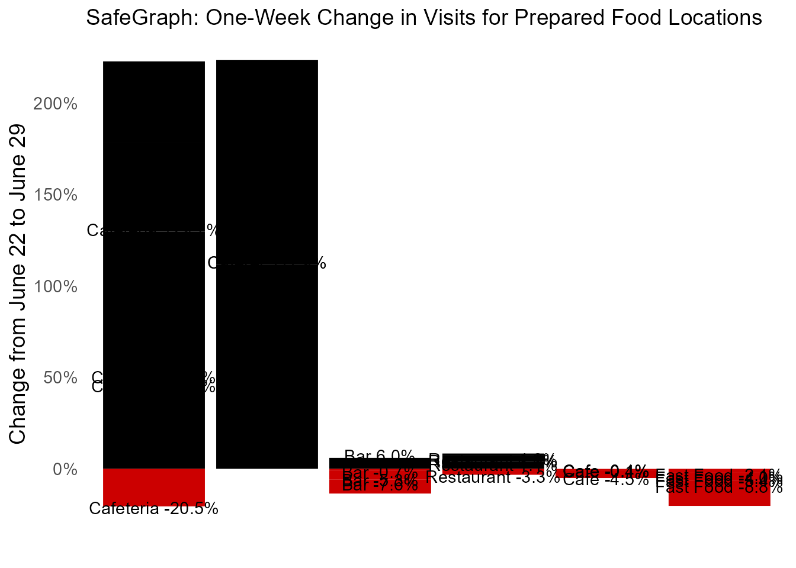
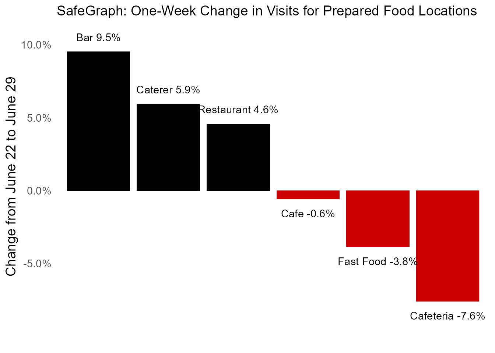

patterns_vignette.Rmdlibrary(SafeGraphR)
This vignette will walk you through the process of reading in, processing, and displaying SafeGraph patterns data.
This vignette will work with weekly data from the weekly-patterns-delivery/weekly SafeGraph Amazon Web Services bucket (see the SafeGraph Catalog for more information), which could also be downloaded using safegraph_aws(). However, with only minor variation in the first section, the same processes could be applied to data downloaded from the SafeGraph shop, or to monthly patterns, or to weekly-patterns/v2 data under the old format.
Note that throughout this vignette, we will be working with data manipulation using the data.table package. data.table is used throughout SafeGraphR (and on the backend) because it is very fast and can handle large data sets easily. However, once the data is read in and processed, it’s often no longer necessary to use data.table if you prefer something else. The code in this vignette could have easily used, for example, dplyr instead. If you are having trouble understanding the code chunks because you’re familiar with dplyr but not data.table, see this guide that links the two.
We will be reading in data from the July 1, 2020 weekly patterns release (why only one week? To keep things small enough that the example data can be included in the package).
The read_patterns() function can read in a single patterns file. But most of the time you will probably be using read_many_patterns(), which reads multiple patterns files, processes them, and row-binds them together.
If you truly want the raw data, you are probably best off skipping read_many_patterns() and instead just doing list.files() %>% purrr::map(data.table::fread) %>% data.table::rbindlist(). However, this would return an enormous result, and you probably just want a subset of the data, or some aggregated data.
read_many_patterns() can perform multiple different aggregations in a single go, aggregating each of them across multiple files.
So how can we build a read_many_patterns() call? The tricky part will be in filling in the aggregation information in the by, fun, na.rm, filter, expand_int, expand_cat, and expand_name options.
These options are expanded further upon in read_patterns(). Effectively, they determine the level to aggregate the data to (data will be aggregated to the by-and-expanded-JSON-column-index level), the function to use for aggregation (fun), whether to only pull a subset of the data (filter), and which of the JSON columns in the data to expand before aggregating (expand_int OR expand_cat, with expand_name giving the name of the index variable to be created).
Importantly, you will get one row per by-per-JSON-column-index-PER-FILE. The PER FILE is important especially with the new patterns files where the same date data is broken up over several files. You may have to re-aggregate after reading in when using this new data.
So for example, if we want to get the number of visits by day by NAICS code, we would want to set by = 'naics_code'. The visits-by-day variable is visits_by_day and is stored in the format [1,2,3,4,5,6,7] which can be extracted internally by expand_integer_json(), i.e. it’s a numeric JSON column (as opposed to a categorical JSON column like visits by CBG in the format {category: number, category: number} which can be extracted intenally by expand_cat_json()). So we set expand_int = 'visits_by_day'. When we do expand_int = 'visits_by_day', then expand_name will default to “day” so we don’t need to do anything there. We do want it to add up the visits by day across all the different POIs in that NAICS code, so fun = sum as default is fine. This gives us in total by = 'naics_code', expand_int = 'visits_by_day'.
# Not yet working code patterns_naics_code <- read_many_patterns(by = 'naics_code', expand_int = 'visits_by_day')
Now instead let’s imagine we want the total number of all visits to any POI by county, but only in New York and New Jersey. Now we want to aggregate to the state/county level, so we want by = c('state_fips', 'county_fips') (don’t try just doing 'county_fips' as the same county FIPS code is reused across states). Again we want expand_int = 'visits_by_day'. However, now that we are looking just at New York and New Jersey, we need to use filter, which we can do by specifying the filter as a string. So filter = state_fips %in% c(34, 36), where 34 and 36 are the New Jersey and New York FIPS codes, respectively. So now we have by = c('state_fips', 'county_fips'), expand_int = 'visits_by_day', filter = 'state_fips %in% c(34, 36).
# Not yet working code patterns_NY_NJ <- read_many_patterns(by = c('state_fips', 'county_fips'), expand_int = 'visits_by_day', filter = 'state_fips %in% c(34, 36)')
Those are the relevant aggregation options to follow. And, since we want both of them, we can get them both in one call (rather than having to read in the data separately for each, which is slow). We just toss each of these sets of options in a list(), adding the required option name to tell us which aggregation we’re doing, and then putting both of those lists in a bigger list() for multi.
# Not yet working code patterns <- read_many_patterns(multi = list( list(name = 'patterns_naics', by = 'naics_code', expand_int = 'visits_by_day'), list(name = 'NY_NJ', by = c('state_fips', 'county_fips'), expand_int = 'visits_by_day', filter = 'state_fips %in% c(34, 36)') ))
What else do we need?
First, of course, we need to tell it where the patterns files are. We can specify dir (or it will just go to the working directory). Or if we want to do our own list.files() command and pick a subset, we can give it to filelist. Since we are working with new-format data that sits inside nested folders, we want to be sure to specify recursive = TRUE so as to look in those folders.
Second, if we want to aggregate (or filter) by NAICS code, which we do, we need to know the NAICS code of each POI. We can do that by processing the most recent monthly SafeGraph Core file using link_poi_naics. Then we can pass the resulting file to the naics_link option.
poi_link <- link_poi_naics('Core-USA-June2020-Release-CORE_POI-2020_05-2020-06-06.zip') # I probably at this point would save poi_link to disk - that took a while!
Next, if we want to use the state and county FIPS codes, we want to make sure that gen_fips = TRUE, which it is by default, so we’re good there. This uses fips_from_cbg() internally.
Fourth, patterns files don’t tell you what the first date in them is. read_many_patterns() will try to guess that date by the filepath. But if you want to be sure, you can set start_date for each of the files being read in.
Finally, and very important, if we are doing any sort of aggregation we probably want to specify select, a character vector of variables to be read in. If we don’t, then reading in the data will take way longer. Also, if some of those variables aren’t amenable to being aggregated with fun, you could get an error. We are planning to use the visits_by_day variable so we need that. We’ll also use poi_cbg (to be sent to fips_from_cbg() to get state_fips and county_fips), but that’s in by default whenever gen_fips = TRUE. We also need naics_code, but that isn’t read in from the file; rather it comes from the poi_link data we made. So we specify select = 'visits_by_day'.
See the SafeGraph docs for full documentation of all the available variables.
Note that select applies to the file as it’s read in before any aggregation, so it goes in read_many_patterns directly, not inside of multi.
In total, we have:
# Assume our working directory is the the /patterns/ folder patterns <- read_many_patterns(recursive = TRUE, naics_link = poi_link, select = 'visits_by_day', multi = list( list(name = 'patterns_naics', by = 'naics_code', expand_int = 'visits_by_day'), list(name = 'NY_NJ', by = c('state_fips', 'county_fips'), expand_int = 'visits_by_day', filter = 'state_fips %in% c(34, 36)') ))
Internally, this calls read_patterns() many times, followed by rbind_by_list_pos().
The result will be patterns, a list, where patterns[[1]] (or patterns[['patterns_naics']]) contains the NAICS aggregation, and patterns[[2]] (or patterns[['NY_NJ']]) contains the New York/New Jersey aggregation. Let’s save those as their own objects (which will then be a part of the package so we can use real data in this vignette!).
# This data is one observation per NAICS code per day pat_naics <- patterns[['patterns_naics']] # This data is one observation per NY/NJ county per day pat_NY_NJ <- patterns[['NY_NJ']] # At this point I'd save both of these to disk, that took a whole five minutes! rm(patterns)
# Now to load in for real! data(pat_naics) pat_naics[] #> naics_code state_fips county_fips visits_by_day day start_date date #> 1: NA 105563 368142 9441 1 2020-06-22 2020-06-22 #> 2: NA 105563 368142 9447 2 2020-06-22 2020-06-23 #> 3: NA 105563 368142 10063 3 2020-06-22 2020-06-24 #> 4: NA 105563 368142 10096 4 2020-06-22 2020-06-25 #> 5: NA 105563 368142 10717 5 2020-06-22 2020-06-26 #> --- #> 9243: 928120 933 2663 147 3 2020-06-22 2020-06-24 #> 9244: 928120 933 2663 155 4 2020-06-22 2020-06-25 #> 9245: 928120 933 2663 152 5 2020-06-22 2020-06-26 #> 9246: 928120 933 2663 60 6 2020-06-22 2020-06-27 #> 9247: 928120 933 2663 40 7 2020-06-22 2020-06-28
data(pat_NY_NJ) pat_NY_NJ[] #> state_fips county_fips naics_code visits_by_day day start_date date #> 1: 34 1 NA 5862 1 2020-06-22 2020-06-22 #> 2: 34 1 NA 5754 2 2020-06-22 2020-06-23 #> 3: 34 1 NA 5769 3 2020-06-22 2020-06-24 #> 4: 34 1 NA 5887 4 2020-06-22 2020-06-25 #> 5: 34 1 NA 6778 5 2020-06-22 2020-06-26 #> --- #> 2320: 36 123 40485879 253 3 2020-06-22 2020-06-24 #> 2321: 36 123 40485879 217 4 2020-06-22 2020-06-25 #> 2322: 36 123 40485879 294 5 2020-06-22 2020-06-26 #> 2323: 36 123 40485879 440 6 2020-06-22 2020-06-27 #> 2324: 36 123 40485879 245 7 2020-06-22 2020-06-28
Notice in looking at pat_naics that the missing-NAICS code POIs have been included. Also notice that state_fips and county_fips are nonsense. We loaded them in (for pat_NY_NJ) but then didn’t use them in aggregation! So it summed them up and they’re nonsense now. Same issue with naics_code in pat_NY_NJ. We can drop them.
pat_naics[,state_fips := NULL] pat_naics[,county_fips := NULL] pat_NY_NJ[,naics_code := NULL]
We will also need the normalization data to properly work with what we have. Normalization data is just in regular ol’ CSV files, so we can read everything in with read_many_csvs(), using recursive = TRUE to look for all the files. Since normalization files have year, month, and day columns, we can also set makedate = TRUE to get a date variable in there.
norm <- read_many_csvs(dir = "../normalization_stats/", recursive = TRUE, makedate = TRUE)
data(norm) norm[] #> total_visits total_devices_seen total_home_visits total_home_visitors #> 1: 50656915 17312070 23890767 14335375 #> 2: 50805493 16870682 23389482 14021137 #> 3: 52223098 17103600 23758844 14153853 #> 4: 52544946 17014972 23460878 13980621 #> 5: 54186679 16964900 23425016 13993356 #> 6: 49766561 16304498 22301353 13344340 #> 7: 45347171 16341487 23068199 13912816 #> date #> 1: 2020-06-22 #> 2: 2020-06-23 #> 3: 2020-06-24 #> 4: 2020-06-25 #> 5: 2020-06-26 #> 6: 2020-06-27 #> 7: 2020-06-28
Finally, if we want to do sample_size_adjust(), we will need the number of devices by region from the home panel summary files. We can also read this with read_many_csvs().
# Make sure that census_block_group is read as a character # note colClasses is a data.table::fread() argument panel <- read_many_csvs(dir = '../home_panel_summary', recursive = TRUE, colClasses = c(census_block_group = 'character')) # We only need the start date, census block group, and number of devices panel <- subset(panel, select = c('date_range_start', 'census_block_group', 'number_devices_residing')) # We will be needing this only at the county level panel[,c('state_fips','county_fips') := fips_from_cbg(census_block_group)] panel <- panel[,.(number_devices_residing = sum(number_devices_residing), date_range_start = first(date_range_start)), by = c('state_fips','county_fips')] # We don't need the timestamp in the date range but we DO need it to be named 'start_date' panel[,start_date := as.Date(date_range_start)] panel[,date_range_start := NULL]
data(panel) panel[] #> state_fips county_fips number_devices_residing start_date #> 1: 2 170 4565 2020-06-22 #> 2: 2 195 73 2020-06-22 #> 3: 2 158 90 2020-06-22 #> 4: 2 90 3562 2020-06-22 #> 5: 2 50 175 2020-06-22 #> --- #> 3224: 56 15 626 2020-06-22 #> 3225: 56 11 367 2020-06-22 #> 3226: 56 35 431 2020-06-22 #> 3227: 56 17 236 2020-06-22 #> 3228: 56 19 483 2020-06-22
We have a few goals at this point:
The aggregation we want to do at this point depends on where we want the data to go. Let’s work on pat_NY_NJ. If we want to use state-level data to inform individual county estimates, we should consider using hb_shrink (and an example of that will be in the social distancing vignette). But if we want to use county-level estimates to aggregate up to the state level, we might want to use sample_size_adjust() to account for differences in sampling rates across counties.
You may also want to do more adjustments for changes over time in the sample size, as described in Section 2 of the Normalization Best Practices guide. But this is not done here (except in the normalization step).
In general, sample_size_adjust() compares the number of devices in each county (or census block group) to the population in that area, and adjusts the total counts as though every region were sampled at the same rate.
# First merge in panel, which has the number_devices_residing we need to know how big the SafeGraph sample is in that area pat_NY_NJ <- merge(pat_NY_NJ, panel) # we are going FROM county TO state # the use of number_devices_residing is default # data(county_pop) will be used by default for the adjustment adjust_factor <- pat_NY_NJ %>% sample_size_adjust(from_id = c('state_fips','county_fips'), from_level = 'county', to_level = 'state') # There are a few counties we don't have county population data for # For these let's assume we don't need to adjust adjust_factor[, adjust_factor := data.table::fifelse(is.na(adjust_factor), 1, adjust_factor)] # And adjust visits pat_NY_NJ <- merge(pat_NY_NJ, adjust_factor) pat_NY_NJ[, visits_by_day_adj := visits_by_day*adjust_factor] # And aggregate to the state level pat_NY_NJ <- pat_NY_NJ[,.(visits_by_day_adj = sum(visits_by_day_adj)), by = c('state_fips', 'date')]
Now for NAICS, we don’t need to do this sample size adjustment. However, as previously mentioned, this used new data, so we have one row per NAICS code per day per original file, and since the patterns data was broken up into four files, we have four rows where we want one, and need to aggregate again.
Next up we normalize by the size of the SafeGraph data set on the day, which came from the normalization stats.
This is as simple as merging in our norm data we made, and dividing by total_devices_seen. We do this for both pat_NY_NJ and pat_naics.
We can use the ma() function, which is a (by default) seven-day moving average to smooth out day-of-week (especially weekend) effects.
Just make sure we’re ordered by date first, and perform the calculation by group.
Note that I am not actually running this code in the vignette since the example data is only seven days long.
SafeGraph does a much better job showing growth or change in visits, rather than the absolute number of visits, since it’s hard to pin down exactly how much of the population we’re looking at.
So for most analyses we want to scale visits relative to a given date. We can do this with scale_to_date() (with multiple years of data we could do scale_yoy()).
Let’s just scale to the first date in the data, June 22, 2020.
# Careful with by! The data really should be uniquely identified by the combination of date_var and by. pat_NY_NJ <- pat_NY_NJ %>% scale_to_date(adj_vars = 'norm_visits', date = lubridate::ymd('2020-06-22'), by = 'state_fips') pat_naics <- pat_naics %>% scale_to_date(adj_vars = 'norm_visits', date = lubridate::ymd('2020-06-22'), by = 'naics_code')
All we have to do at this point is bring in the appropriate labels, and graph things (or do whatever we’d like to do).
The fips_to_names data set has state and county names. We’ll be using it to put “New York” and “New Jersey” in the appropriate places (not that that’s too tricky to do by hand in this reduced example).
data("fips_to_names") # This comes with both county and state. We only want state for this application since we already aggregated away the counties fips_to_names <- fips_to_names %>% subset(select = c('state_fips', 'statename')) %>% unique() # and merge in pat_NY_NJ <- merge(pat_NY_NJ, fips_to_names) pat_NY_NJ[,c('state_fips','statename','date','norm_visits')] #> state_fips statename date norm_visits #> 1: 34 New Jersey 2020-06-22 0.00000000 #> 2: 34 New Jersey 2020-06-23 0.03507757 #> 3: 34 New Jersey 2020-06-24 0.05996143 #> 4: 34 New Jersey 2020-06-25 0.07625526 #> 5: 34 New Jersey 2020-06-26 0.15358794 #> 6: 34 New Jersey 2020-06-27 0.05493578 #> 7: 34 New Jersey 2020-06-28 -0.11939039 #> 8: 36 New York 2020-06-22 0.00000000 #> 9: 36 New York 2020-06-23 0.06456086 #> 10: 36 New York 2020-06-24 0.09714929 #> 11: 36 New York 2020-06-25 0.13140923 #> 12: 36 New York 2020-06-26 0.18879022 #> 13: 36 New York 2020-06-27 0.03962685 #> 14: 36 New York 2020-06-28 -0.09017521
The naics_codes data set links NAICS codes to their titles. These can sometimes still be a little longer than we need, but at least now we’ll know what they mean!
data("naics_codes") # Without specifying to keep all rows in X, this will omit the missing NAICS codes pat_naics <- merge(pat_naics, naics_codes) data.table::setorder(pat_naics, naics_code, naics_title, date) pat_naics[,c('naics_code','naics_title','date','norm_visits')] #> naics_code naics_title date norm_visits #> 1: 111421 Nursery and Tree Production 2020-06-22 0.00000000 #> 2: 111421 Nursery and Tree Production 2020-06-23 0.06814242 #> 3: 111421 Nursery and Tree Production 2020-06-24 0.16861782 #> 4: 111421 Nursery and Tree Production 2020-06-25 0.38282196 #> 5: 111421 Nursery and Tree Production 2020-06-26 0.33124169 #> --- #> 2390: 928120 International Affairs 2020-06-24 0.05801610 #> 2391: 928120 International Affairs 2020-06-25 0.07153863 #> 2392: 928120 International Affairs 2020-06-26 0.02247280 #> 2393: 928120 International Affairs 2020-06-27 -0.41057716 #> 2394: 928120 International Affairs 2020-06-28 -0.61628256
Now we can finally make some pretty graphs (why so much movement over the space of only one week? Becuase we skipped the seven-day-moving-average step!)
ggplot2::ggplot(pat_NY_NJ, ggplot2::aes(x = date, y = norm_visits, color = statename)) + ggplot2::geom_line(size = 2) + ggplot2::theme_minimal() + ggplot2::theme(panel.grid.major.x = ggplot2::element_blank(), panel.grid.minor.x = ggplot2::element_blank(), text = ggplot2::element_text(size = 15, family = 'serif')) + ggplot2::labs(x = 'Date', y = 'Change Since June 22', title = 'SafeGraph: Change in Visits Since June 22, 2020') + ggplot2::guides(color = FALSE) + directlabels::geom_dl(ggplot2::aes(x = date + .1, label = statename), method = list('last.bumpup', cex = 1.3)) + ggplot2::scale_x_date(limits = c(min(pat_NY_NJ$date), max(pat_NY_NJ$date)+2)) + ggplot2::scale_y_continuous(labels = scales::percent)

rests <- pat_naics %>% # Restaurant codes subset(floor(naics_code/1000) == 722) # The NAICS titles can be too long for graphs short_names <- data.frame(naics_title = unique(rests$naics_title), naics_short = c('Caterer', 'Bar', 'Restaurant', 'Fast Food', 'Cafeteria', 'Cafe')) rests <- rests %>% subset(date == max(pat_naics$date)) %>% merge(short_names, by = 'naics_title') data.table::setorder(rests, -norm_visits) rests$naics_short <- factor(rests$naics_short, levels = unique(rests$naics_short)) ggplot2::ggplot(rests,ggplot2::aes(x = naics_short, y = norm_visits, fill = norm_visits > 0)) + ggplot2::geom_col() + ggplot2::geom_text(ggplot2::aes(label = paste(naics_short, scales::percent(norm_visits, accuracy = .1)), y = norm_visits + .01 - .02*(norm_visits < 0))) + ggplot2::theme_minimal() + ggplot2::theme(text = ggplot2::element_text(size = 14), plot.title = ggplot2::element_text(size = 14), panel.grid = ggplot2::element_blank()) + ggplot2::guides(fill = FALSE) + ggplot2::scale_y_continuous(labels = scales::percent) + ggplot2::scale_x_discrete(labels = NULL) + ggplot2::scale_fill_manual(values = c('#CC0000','black')) + ggplot2::labs(x = '', y = 'Change from June 22 to June 29', title = 'SafeGraph: One-Week Change in Visits for Prepared Food Locations')
